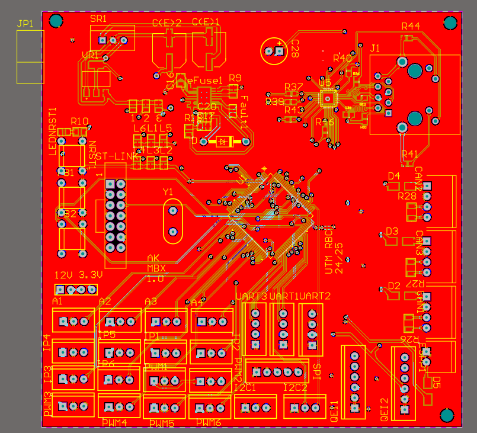
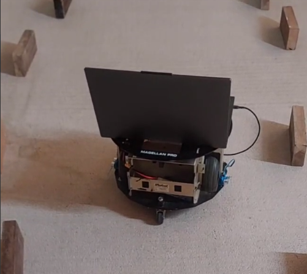
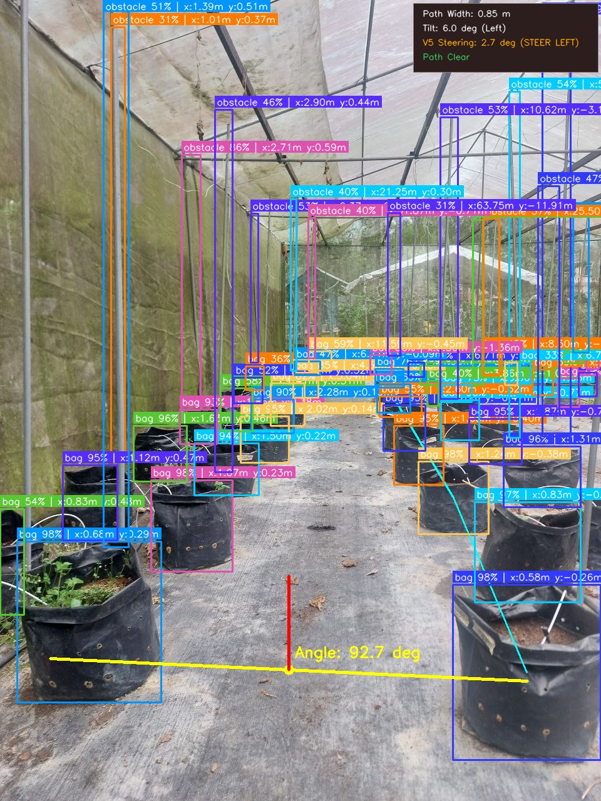
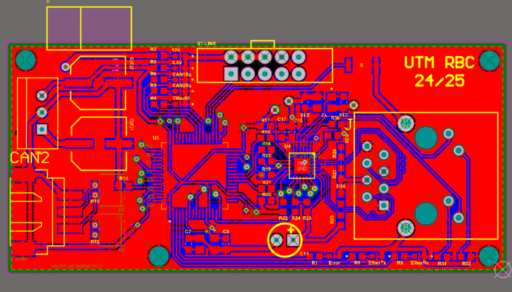
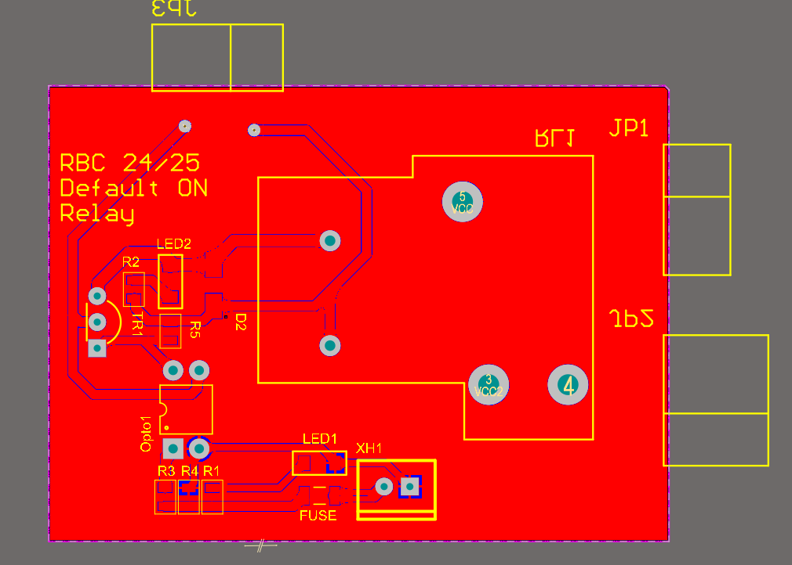

Engineering Hardware, Firmware & Autonomous Robotics
Hello, I'm Moaz Hany Elbakhsha — a Mechatronics Engineer with hands-on expertise in 4-layer high-density PCB routing (Altium), STM32 embedded systems, closed-loop control, and ROS2-driven autonomous mobile robotics.
Moaz Hany
Mechatronics & Embedded Engineer
Bridging Pure Hardware with Intelligent Control
System-Level Hardware Design
Specialized in multi-layer PCB design using Altium Designer. Experienced in routing 100-ohm impedance-controlled differential pairs (Ethernet, RMII), noise-isolated 4-layer stackups, CAN bus transceivers, eFuse power protection, and high-current power switching up to 50A.
Embedded Firmware & Protocols
Proficient in bare-metal and HAL development for STM32 (Cortex-M7, M4, M3) and microcontrollers. Solid experience architecting robust multi-node fieldbus communications across CAN1/2/3, high-speed SPI, I2C, and UART.
Autonomous Robotics & Perception
Engineering end-to-end robotics systems: from sensor fusion (ultrasonic arrays, IMUs, quadrature and magnetic encoders) to ROS2 navigation state machines, closed-loop PID motion control, and real-time edge computer vision using YOLOv8.
Industrial QA & Production Test
Industrial test engineering track record at ViE Technologies, designing closed-loop optical illumination test benches, automated X-ray glass transparency QA, and limit-switch protected precision positioning mechanisms.
Featured Engineering Projects

PCB & Hardware4-Layer STM32H7 Central Robotics Mainboard (UTM RBC 24/25)
High-density central robot controller engineered for international robotics competition. Upgraded to 480 MHz STM32H7 to eliminate legacy MCU processing lag, and integrated a 3rd dedicated CAN channel to prevent signal crashes under heavy bus loads.

Robotics & Autonomous SystemsAutonomous Navigation & Control System for Greenhouse Mobile Robot (FYP)
Differential-drive autonomous mobile robot platform engineered for agricultural row-following. Combines ROS2 finite state machine with 4x ultrasonic distance array, IMU, and dual-PID control for crop-line tracking, 90° row transitions, and 160° obstacle U-turn recovery.

Computer Vision & Edge AIEdge AI Vision & Plant Disease Guidance System for Agricultural Robotics
Real-time edge computer vision pipeline engineered for greenhouse row guidance and crop inspection using YOLOv8 at 10 Hz. Solved path-identification failures faced by earlier student iterations by detecting crop polybag lines to dynamically calculate navigation corridors directly between the plants.

PCB & HardwareIndustrial Ethernet-to-CAN Communication Gateway PCB
Multi-sheet industrial communication gateway. Features strict 100Ω differential pair routing (ETHER_TX/RX), length-matched RMII lines, dual CAN transceivers with 120Ω termination, and integrated magnetics RJ45.
Industrial Closed-Loop Illumination & Precision Moving Base (ViE Technologies)
Automated optical camera testing rig. Developed photodiode closed-loop illumination compensating for non-linear light intensity, coupled with an encoder-driven, limit-switch-protected precision motorized moving base for camera QA.
 PCB & Hardware
PCB & Hardware
AS5047P 14-Bit High-Precision Magnetic Rotary Encoder Board
Miniaturized position feedback PCB solving 3.3V sensor supply challenges on 12V robot buses. Integrates an onboard MIC5205 LDO for direct 12V-to-3.3V regulation, delivering high-speed SPI and ABI quadrature feedback for closed-loop motor control.
 PCB & Hardware
PCB & Hardware
Robot Localization & Sensor Fusion Board (RBC24/25 LB1.0)
Dedicated 2-layer coprocessor PCB engineered to relieve CPU and interrupt load on the central mainboard by hardware-capturing high-speed encoder ticks, computing real-time planar odometry locally, and streaming telemetry over CAN bus.

PCB & Hardware50A / 24V High-Current Motor Relay & Cutoff Module
Engineered to control high-power robot drive motors and safely cut off 24V/50A motor power on command via a 5V controller signal. Features PC817 optocoupler isolation, an AZ21501 power relay, Deans connectors, and flyback spike suppression.
Engineering Experience & Leadership
ViE Technologies
Embedded Systems & Python Engineering Intern — Camera Team
- Closed-Loop Illumination Feedback System: Engineered an automated photodiode closed-loop control system utilizing Arduino and Python to compensate for non-linear optical scaling, eliminating manual operator calibration on active QA rigs.
- Precision Motorized Moving Base: Designed and programmed an encoder-driven, limit-switch protected motion control stage ensuring repeatable, micrometer-level positioning accuracy for camera sensors.
- X-Ray Glass Optical Transparency QA Station: Developed integrated software and electrical automation for an automated optical test bench assessing light transmittance on industrial X-ray inspection camera windows.
- Industrial Power Control & Troubleshooting: Conducted component selection, electrical panel wiring, equipment fitting, and Python GUI integration for automated production line test benches.
UTM Robocon Club (Universiti Teknologi Malaysia)
PCB Designer & Electronics Lead Member
- Flagship 4-Layer STM32H7 Mainboard: Spearheaded full design, schematic capture, and 4-layer layout in Altium Designer. Embedded 3x isolated CAN ports, 3x UART, dual I2C, 6x PWM, dual QEI, and TI TPS eFuse protection.
- High-Speed Communication Boards: Designed an STM32F107 Ethernet-to-CAN gateway featuring 100Ω impedance-controlled differential pair routing and RMII length-matched signals.
- Sensor & Localization Nodes: Developed the AS5047P 14-bit magnetic encoder boards and real-time dual-wheel encoder + IMU localization boards.
- Competitive High-Pressure Troubleshooting: Diagnosed critical signal integrity and power control bottlenecks in real-time under intense international robotics competition deadlines (ABU Robocon Vietnam).
Skills & Engineering Stack
Hardware & PCB Engineering
Embedded Systems & Firmware
Robotics, AI & Control
Prototyping, CAD & Test
Honors, Awards & Education
Panasonic Award – ABU Robocon 2024
Quảng Ninh, Vietnam
Recognized on the international stage for outstanding robotics design, mechanical/electrical agility, and engineering sportsmanship.
Champion – Malaysia Robocon Friendly Match
Malaysia National Robotics Event
1st place championship performance as lead electronics engineer with UTM Robocon team.
UTM Mechatronics Theme Award
Universiti Teknologi Malaysia
Awarded top mechatronics engineering honor at Universiti Teknologi Malaysia for intelligent robotics and automation innovation.
Participant – UTM RBC Autocar Challenge
UTM Robotics Competition
Engineered custom autonomous breakout electronics for rapid obstacle-course autocar challenge.
Bachelor of Mechatronic Engineering
Universiti Teknologi Malaysia (UTM) | Johor, Malaysia
Oct 2022 – Feb 2027 (Expected)High School Diploma
Zahrat El-Saharaa International School | Jeddah, Saudi Arabia
CGPA: 3.8 / 4.0Let's Build Something Exceptional
Whether you are discussing engineering opportunities, collaboration on embedded hardware, robotics, or contract PCB design, my inbox is always open.
moaz.hany.elbakhsha@gmail.com
Phone / WhatsApp
+60 11-3704-7003
Location
Taman Desa Skudai, Johor, Malaysia
Open to RelocationSend Direct Message
Have an engineering role or technical collaboration in mind? Fill out below to connect directly.